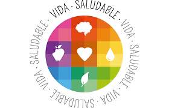

| El mejor momento para inculcar y por tanto, adquirir este tipo de hábitos es la infancia, la etapa en que el niño aprende y copia comportamientos de los adultos que le rodean y que lógicamente va a depender del contexto familiar, social y cultural en el que el niño se desenvuelve.
Un estilo de vida saludable, fomenta una buena calidad de vida, previene enfermedades y potencia factores de protección. Si trabajamos los hábitos alimentarios en niños, la higiene entendida en su sentido más amplio y la actividad física, seguramente conseguiremos que nuestros hijos maduren de forma saludable y estable.
|
 |